公开脊柱影像数据集调研
VerSe、CTSpine1K、SPIDER、RSNA 2024 腰椎、CSXA 颈椎 X 光。覆盖 CT、MRI、X 光三种模态，分割、分级、关键点三类任务。每个数据集我都下载了样例，用 Python 读进来检查过；最后讨论怎么把三维数据放进一页 PPT。
- 选了哪几个，怎么下载和读取2 min
- 基础数据：灰度、形状、标注、典型病例6 min
- 基线方法与目前刷到的指标3.5 min
- 三维数据怎么在二维页面里讲清楚3.5 min
医学图像处理课程汇报2026 年 9 月
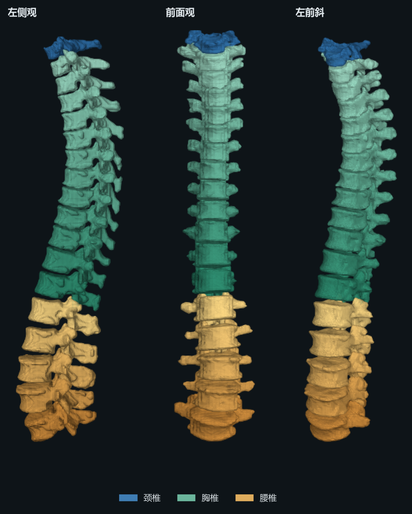
概览
选这五个，是为了让模态和任务尽量不重复
| 数据集 | 模态 | 部位 | 规模 | 标注 | 主要任务 | 获取 |
|---|---|---|---|---|---|---|
| VerSe '19 / '20 | CT | 全脊柱，多为截取视野 | 374 次扫描 / 355 人 4,505 节椎骨 | 逐椎体体素掩膜 + 椎体质心 | 椎骨定位识别、实例分割 | OSF、S3 直链，CC BY-SA 4.0 |
| CTSpine1K | CT | 颈、胸、腰（来自结肠 CT、头颈、肝脏、COVID 胸部 CT） | 1,005 例 11,172 节椎骨 | 逐椎体掩膜，标签 1–25 | 椎骨分割 | HuggingFace、XNAT，CC BY-NC-SA 4.0 |
| SPIDER | MRI | 腰椎，矢状 T1、T2、T2 SPACE | 218 人 / 447 序列 | 椎骨、椎间盘、椎管分割；每个椎间盘的放射学分级 | 分割，附带退变分级 | Zenodo，CC BY 4.0 |
| RSNA 2024 腰椎退变 | MRI | 腰椎 L1/L2 到 L5/S1 | 训练集约 1,975 例 全集 2,697 例 | 5 种狭窄 × 5 个节段，3 级严重程度，外加定位点 | 诊断分级（分类） | Kaggle 注册后下载；本次用 HF 镜像 |
| CSXA | X 光 | 颈椎侧位片 | 4,963 张 | 23 个关键点，118 项测量参数，曲度分型 | 关键点检测、参数回归、分型 | Science Data Bank、HF 镜像 |
也看过但没放进来的：TotalSegmentator（全身 CT，脊柱只是 100 多个结构之一）、RSNA 2022 颈椎骨折（CT 骨折检测，任务和 RSNA 2024 同属 Kaggle 竞赛，选一个就够）、AASCE 2019（609 张脊柱正位片的 Cobb 角估计，需在 SpineWeb 申请）、VinDr-SpineXR（需要 PhysioNet 资质认证）。
概览
全集总共两百多 GB，我只拉了几个病例
VerSe 和 SPIDER 都是按整个 zip 发布的，但服务器支持 HTTP Range。我写了一个小工具：先只读 zip 末尾的目录，再按偏移量把单个 .nii.gz / .mha 取下来。这样 3.5 GB 的包，实际只下载二十来 MB。
| VerSe'19 验证集 | 2.16 GB 的包里取 3 个病例，约 78 MB |
| SPIDER | 3.5 GB 图像包取 3 个序列，掩膜和两个 CSV 表 |
| CTSpine1K | HF 仓库约 150 GB，按文件取 2 例 |
| RSNA 2024 | HF 镜像 parquet 整个下载，345 MB |
| CSXA | PNG 包和 JSON 包各取 8 张，外加 Excel 参数表 |
*_ct_seg.nii.gz，其他子集叫 *_seg.nii.gz，按统一规则拼路径会 404。# CT / NIfTI：先统一到 RAS 方向，再谈切片 import nibabel as nib, SimpleITK as sitk, numpy as np img = nib.as_closest_canonical(nib.load("sub-verse010_ct.nii.gz")) ct = np.asanyarray(img.dataobj) # (x, y, z)，float32，单位 HU img.header.get_zooms() # (1.0, 1.0, 1.0) mm nib.aff2axcodes(nib.load(p).affine) # 原始方向：VerSe 里既有 PIR 也有 PSR # MRI / MetaImage：数组顺序和 spacing 顺序是反的 mr = sitk.ReadImage("1_t2.mha") arr = sitk.GetArrayFromImage(mr) # (z, y, x) = (578, 448, 50) mr.GetSpacing() # (x, y, z) = (3.32, 0.625, 0.501) # 原始 DICOM（RSNA Kaggle 版）：存储值要换算 ds = pydicom.dcmread(f) img = ds.pixel_array * ds.RescaleSlope + ds.RescaleIntercept # X 光 / LabelMe JSON：每个关键点一条 shape pts = {s["label"]: s["points"][0] for s in json.load(f)["shapes"]} # {"C2 bottom left": [260.2, 344.9], "C3 top left": [...], ...} # 远程 zip 按需解压（scripts/httpzip.py） z = zipfile.ZipFile(HttpFile(url)) # 只发 Range 请求 z.read("images/1_t2.mha")
第一部分：基础数据
同样叫“灰度值”，四种来源的含义完全不同
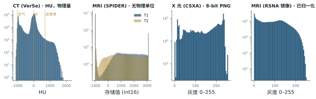
- CT 是物理量。HU 以水为 0、空气为 −1000，骨皮质在 700 以上。VerSe 存成 float32，范围约 −1470 到 2300；CTSpine1K 的 COVID 病例是 int16，视野外填了 −2048，算统计量前要先去掉。
- MRI 没有绝对单位。同一台机器换个序列，数值分布就变了。跨病例比较前必须逐例归一化（z-score 或分位数缩放）。
- SPIDER 的 MRI 被压进了 12 位区间。我读到的值全部落在 [−1000, 3096]，恰好是 0–4096 减去 1000。约 5% 的体素顶在 3096 上，占前景的六分之一左右。论文没提这一步，做强度相关的分析时要注意这是截断过的数据。
- X 光和 RSNA 镜像都是 8 位。CSXA 的 PNG 实际存成 RGB/RGBA，读的时候要转灰度；RSNA 镜像已经从 DICOM 缩放到 0–255，丢掉了原始动态范围。
第一部分：基础数据
VerSe：CT，逐椎体掩膜加质心
MICCAI 2019、2020 两届挑战赛的数据，来自多家医院、多种 CT 设备。每个病例三个文件：CT、椎骨掩膜、质心 JSON。掩膜里标签 1–7 是颈椎，8–19 是胸椎，20–25 是腰椎（25 为 L6），28 留给罕见的 T13。
| 样例 | 形状 | 间距 mm | 方向 | 椎骨 |
|---|---|---|---|---|
| verse010 | 186×206×186 | 1×1×1 | PIR | L1–L5 |
| verse209 | 137×214×74 | 1×1×2 | PSR | C1–T2 |
| verse256 | 218×667×86 | 1×1×2 | PSR | C7–L5 |
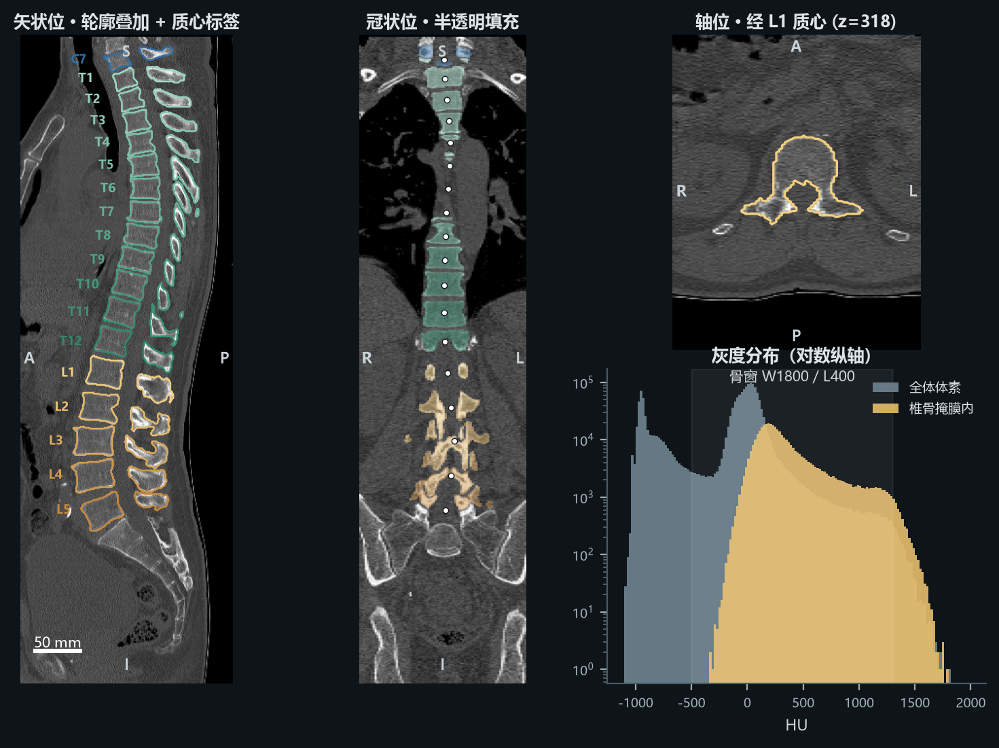
第一部分：基础数据
CTSpine1K：把别人的 CT 重新标一遍，规模到了一千例
图像来自四个已有的公开集：结肠 CT（784 例）、头颈放疗 CT（31）、MSD 肝脏（150）、COVID-19 胸部 CT（40），再加 VerSe 的 41 例做对照。先用在 VerSe 上训练好的 nnU-Net 预标注，再由人工逐级修改，每 100 例重训一次模型。
全集平均层内间距 0.76 mm，层厚 1.10 ± 0.94 mm，但 COVID 子集平均层厚 4.5 mm。训练集 / 公开测试 / 私有测试为 610 / 197 / 198。
| 样例 | 形状 | 间距 mm | 类型 | 值域 | 标签 |
|---|---|---|---|---|---|
| liver_0 | 512×512×75 | 0.70×0.70×5.0 | float32 | −1024 ~ 1410 | T11–L5 |
| covid19-A-0003 | 512×512×291 | 0.74×0.74×1.0 | int16 | −2048 ~ 1604 | C6–T12 |
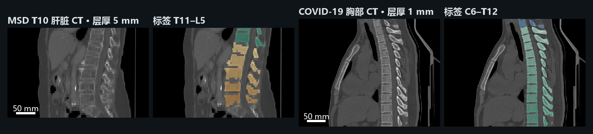
第一部分：基础数据
SPIDER：腰椎 MRI，层厚是层内分辨率的五倍以上
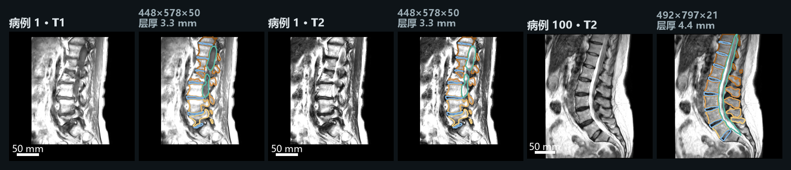
- 荷兰 4 家医院，447 个序列：T1 196、T2 210、T2 SPACE 41；1.5 T 253 个，3 T 194 个；西门子和飞利浦两家。
- 全部是矢状采集。常规序列的体素约 3.3 × 0.6 × 0.6 mm，只有 SPACE 接近各向同性（0.9 × 0.47 × 0.47 mm）。
- 标签是自下而上编号的：最靠尾端的腰椎记为 1，而不直接叫 L5。作者的解释是约 35% 的人有腰骶移行椎，视野不够大时判断不了到底是不是 L5。椎管是 100，椎间盘从 201 开始。
overview.csv保留了 DICOM 头信息（场强、TR/TE、厂商），做域偏移分析时很方便。
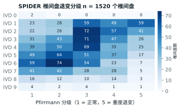
radiological_gradings.csv 共 1,520 行。越靠尾端的椎间盘（IVD 1、2）分级越高，这和腰椎退变的临床规律一致。第一部分：基础数据
RSNA 2024：同一个病人要看三个序列，才能给出 25 个分级
原始版（Kaggle）：每例检查是 DICOM 文件夹，含矢状 T1、矢状 T2/STIR、轴位 T2 三个序列。train.csv 每行是一个病人，25 列对应 5 种病变 × 5 个椎间隙，取值为 Normal/Mild、Moderate、Severe。另有一张表给出每个标签在哪一层、哪个坐标。椎管狭窄在矢状 T2 上标，椎间孔在矢状 T1 上标，侧隐窝在轴位 T2 上标。
我用的 HF 镜像：把上述定位点所在的切片导出成 30,022 张 128×128 的 8 位灰度图，覆盖 1,974 个病人、6,290 个序列，每张带病变类型、节段和等级。体积小，适合快速看数据，但已经不是原始数据。
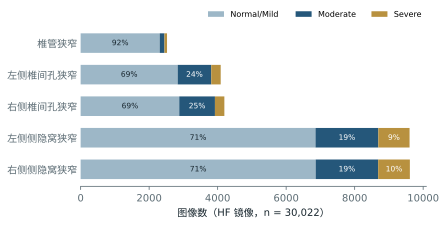
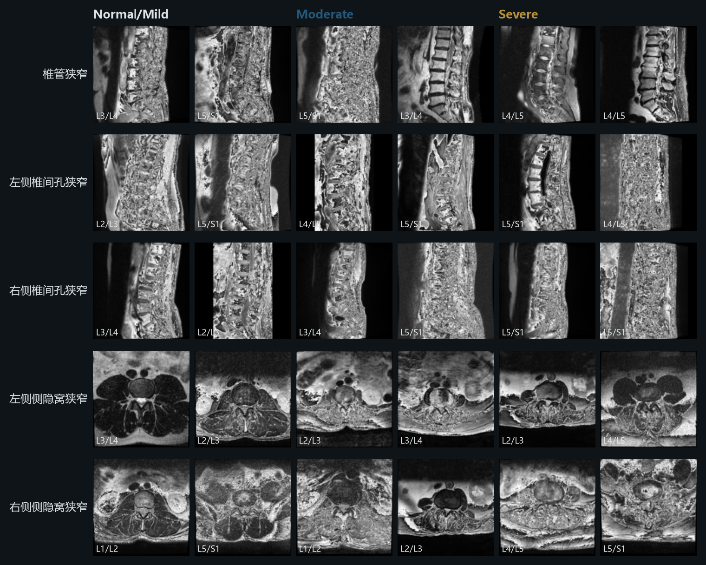
第一部分：基础数据
镜像里约 2% 的图基本不能用
抽样看图时发现有些切片是满屏噪声。我给每张图算了相邻像素的相关系数：正常解剖图在 0.85 以上，纯噪声会掉到 0.3 左右。
| < 0.7 | 584 张（1.9%），基本不可读，集中在轴位的侧隐窝狭窄 |
| 0.7 – 0.8 | 1,583 张，有明显的灰度回绕条纹 |
| ≥ 0.8 | 其余约 93% |
条纹的样子像是 16 位值直接截成 8 位，而不是先缩放再转换。这是我的推测，没有在镜像说明里找到依据。如果真要用这个镜像训练，至少要先把这批图过滤掉；更稳妥的做法是回到 Kaggle 原始 DICOM 自己转换。
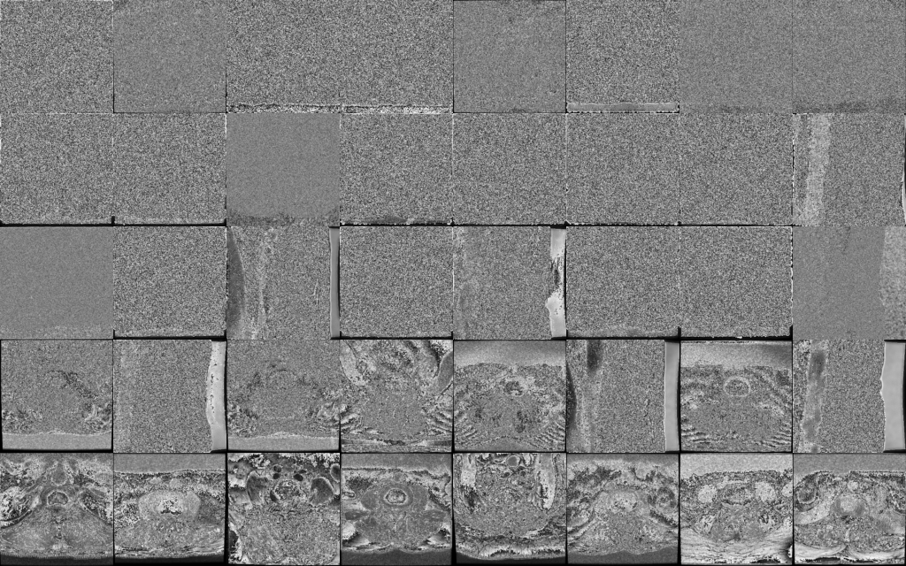
第一部分：基础数据
CSXA：一张侧位片，23 个点，算出 118 项参数
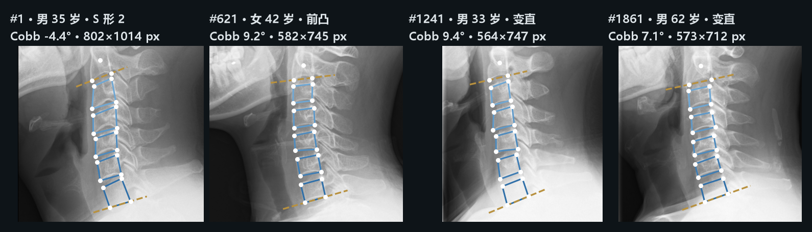
- 文件名本身带信息：
0621142.png是 4 位编号 0621、性别位 1（女）、年龄 42。 - PNG 尺寸不一，约 540–800 px 宽，存成 RGB 或 RGBA。Excel 里有每张图的像素当量（px/mm），换算到毫米要靠它。
- 参数表 5,000 行、126 列，表头有两层。颈椎病 4,818 例、健康 181 例，类别极不均衡，更适合做回归和分型，不适合做二分类。
- 曲度五类：前凸 1,777，变直 1,729，S 形 1 共 319，S 形 2 共 668，后凸 507。
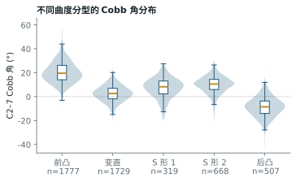
第二部分：基线与性能
先把指标说清楚，否则数字没法比
| Dice | 2|A∩B| / (|A|+|B|)。逐椎体算完再平均（多类别），和把整根脊柱当一个前景算（二分类）差别很大：CTSpine1K 基线前者 0.869，后者 0.985。 |
| HD / HD95 | 两个表面之间的最大距离，或第 95 百分位距离，单位 mm。对零星的假阳性很敏感。 |
| ASD | 平均表面距离，SPIDER 用它。 |
| id.rate | VerSe 的识别率：预测质心离真值不超过 20 mm，而且离它最近的真值正是这一节，才算识别对。 |
| dmean | 预测质心与真值的平均距离，mm。 |
| 加权 log loss | RSNA 2024：Normal/Mild、Moderate、Severe 的样本权重为 1、2、4，另外加一项“是否存在重度椎管狭窄”。越低越好。 |
| Detection | SPIDER 的检出率：结构被找到的比例。 |
| MRE / SMAPE | 关键点任务常用：平均径向误差（mm），以及 Cobb 角的对称平均百分比误差。CSXA 目前没有官方排行榜。 |
第二部分：基线与性能
VerSe：平均分最高的队伍，并不是冠军
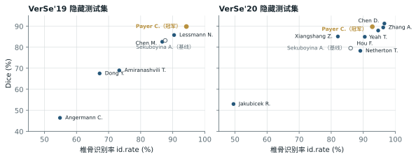
2020 年 Chen D. 的平均识别率 96.58%、Dice 91.23%，都是第一，但冠军是 Payer C.（92.82% / 89.71%）。排名用的是逐病例统计检验后的秩次，而且单独考察了 L6、T13、缺 T12 这些移行椎病例。Payer 的方法在罕见解剖上更稳，所以综合排名更高。
Payer 的方法分三步：先用热图回归定位整根脊柱，再用 SpatialConfiguration-Net 定位并识别每节椎骨，最后逐节裁块做二值分割。这个框架后来成为很多工作的基线。
| 之后的工作 | 测试集 | id.rate | Dice |
|---|---|---|---|
| Meng et al.（图优化 + 解剖一致性） | VerSe'20 公开 / 隐藏 | 96.59 / 95.38 | 92.53 / 91.11 |
| 改进 3D U-Net + 角点配准 | VerSe'20 公开 | 94.13 | 92.38 |
| SpineCLUE, 2024 | VerSe'19 隐藏 | 98.14 | — |
| SpineCLUE, 2024 | VerSe'20 隐藏 | 97.87 | — |
第二部分：基线与性能
CTSpine1K：同一个 nnU-Net，换到 VerSe 上掉了 25 个点
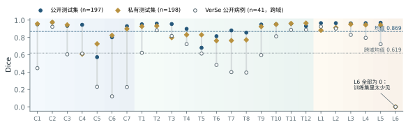
- 基线是 3D 全分辨率 nnU-Net，训练 1,000 个 epoch。逐椎体平均 Dice 公开测试 0.869、私有测试 0.840；整根脊柱二分类 0.985。
- L6 在三个测试集上都是 0。L6 太少见，模型把它当成 L5，后面的编号全部错一位。
- C5、T5–T8 这些中段椎骨明显偏低。作者把 L6 的失败归因于编号错位；中段椎骨和相邻几节形状接近，我推测主要也是编号错位，而不是边界画得不准。
- 拿到 VerSe 的 41 例上测，平均降到 0.619。作者认为主要原因是结肠 CT 里大量肠气，训练分布和 VerSe 不同。
| 近期结果（二值骨分割 Dice） | Dice |
|---|---|
| Bonnet, 2026 | 93.63 |
| STU-Net-L（微调） | 90.17 |
| nnU-Net | 90.06 |
| TotalSegmentator | 89.04 |
| SpineContextResUNet（1.7 M 参数） | 88.17 |
| SwinUNETR | 72.85 |
这组数字来自 2026 年的论文，任务是把骨头和背景分开，数据划分也各自不同，不能和上面的 0.869 或 0.985 直接比较。
第二部分：基线与性能
SPIDER 的榜首还是官方基线，RSNA 的前九名都用两阶段
SPIDER（隐藏测试集，39 人 97 个序列）
| IIS 基线 Dice | nnU-Net Dice | ASD mm | 检出率 | |
|---|---|---|---|---|
| 椎骨 | 0.93 | 0.92 | 0.48 / 0.43 | 99.8 / 100% |
| 椎间盘 | 0.84 | 0.86 | 0.54 / 0.54 | 98.7 / 100% |
| 椎管 | 0.92 | 0.92 | 0.39 / 0.37 | 100 / 100% |
IIS 是逐个椎骨迭代分割的方法（Lessmann 等人的改编），同时也是标注工具：先预测，再人工修，修完加回训练集。Grand Challenge 排行榜第一仍是这个基线（0.926 / 0.845 / 0.921）。椎间盘最难：在 3.3 mm 层厚的矢状图上，椎间盘左右边界只落在一两层里。
CSXA
论文只提供数据和“关键点换算参数”的算法，没有给学习方法的基线。2026 年有一篇合成数据研究用它训练了 SCN 关键点检测（70/15/15 划分），但没有报告可以直接引用的误差。这里是一个空白，也可以作为课程项目的切入点。
RSNA 2024（Kaggle 私有榜，加权 log loss，越低越好）
| 名次 | 第一阶段 | 第二阶段 | 关键做法 |
|---|---|---|---|
| 1 Avengers | 3D ConvNeXt 回归定位 | 2.5D 裁块 + LSTM + 注意力 MIL | MIL 把私有榜从 0.4259 降到 0.4062 |
| 2 | YOLOX 检测椎间隙 | 2.5D 裁块集成 | 删掉预测与标签差 ≥ 0.8 的噪声样本，并对中、重度乘系数，公私榜各提升约 1% |
| 3 | CenterNet 热图 | 多视图 2D + 注意力 | 人工修正部分标签，温度缩放 |
| 4 | 2.5D CNN + LSTM | 多视图 Transformer | MLP 堆叠 |
共同点是先定位、再分类。原因在第一部分已经看到：一例检查有三个序列、几十层，而 25 个标签各自只依赖某个序列里的一小块区域。直接把整组 MRI 送进分类器，信噪比太低。
冠军公开榜 0.3588、私有榜 0.4062，两者差 0.05。这可能和测试集的构成有关：组织方在 L1/L2、L2/L3、L5/S1 这些节段有意补充了高等级病例。
第三部分：可视化
一页 PPT 装一个体数据，要先回答四个问题
- 切哪个面？脊柱是一条弯曲的长柱，任意一个平面只能切到其中一段。
- 按什么比例显示？体素不是正方体：VerSe 是 1×1×2 mm，SPIDER 是 3.3×0.6×0.6 mm，直接
imshow会被压扁或拉长。 - 灰度怎么映射？同一张 CT，选骨窗还是软组织窗，看到的内容完全不同（右图）。
- 二十多类标签怎么区分？颜色不够用，打印成黑白就全没了，所以要靠位置和文字。
后面几页用同一个 VerSe 病例（C7–L5）把常用做法走一遍，每种做法都说明它适合放在什么位置。
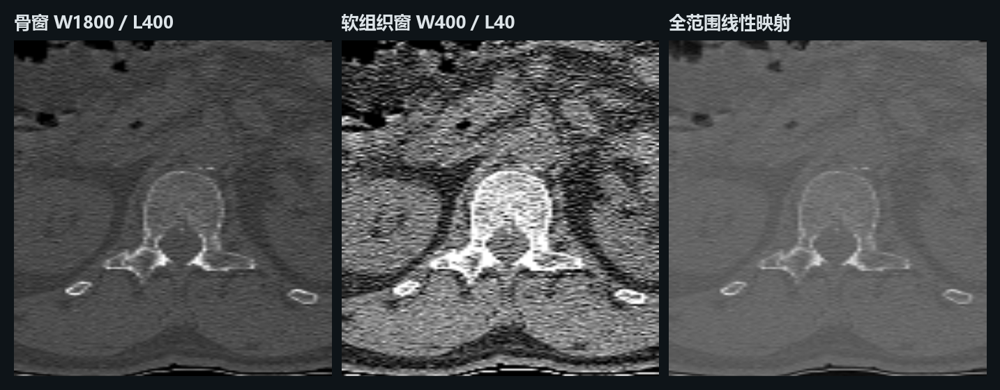
第三部分：可视化
标签叠加：轮廓加编号，比整块填色更适合讲解
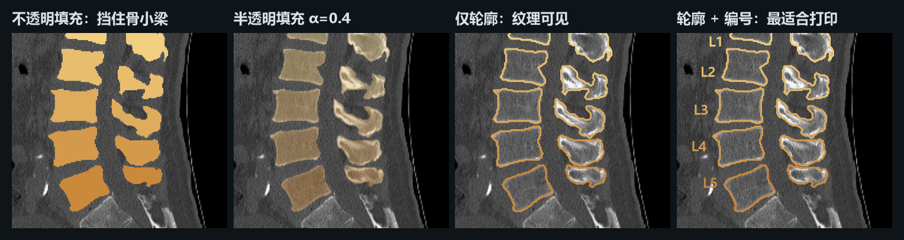
不透明填充只适合放在结果图角落里说明“分出来了”，里面的骨质全部被遮住。
半透明填充适合展示预测和真值的重叠区域，但颜色会和底图混在一起，投影仪上容易发灰。
轮廓加编号保留了底图纹理，编号写在旁边，不依赖颜色也能读，黑白打印也不怕。颜色我按颈、胸、腰分三组渐变，而不是 25 种互不相关的颜色。
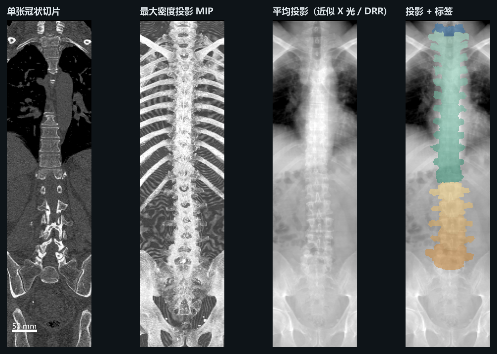
第三部分：可视化
投影压掉一维，灯箱把每节椎骨排成一行
MIP / 平均投影一张图就能看到整根脊柱，代价是前后结构叠在一起，没有深度信息。适合做全局定位图，或者和 X 光数据集放在一起对比。
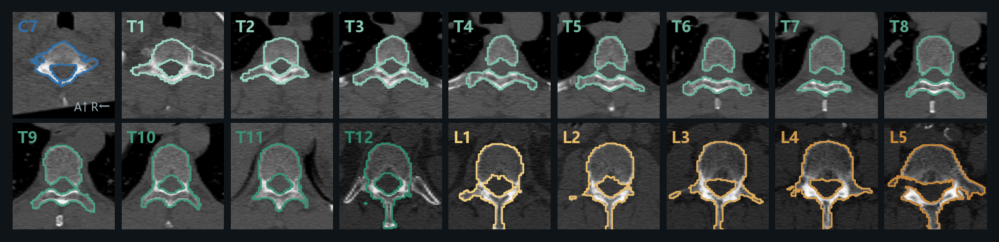
灯箱适合讲“逐节差异”：椎体大小自上而下增大，胸椎两侧有肋骨头，L1 开始横突变长。同样大小的版面，比随便挑三张切片信息量大得多。
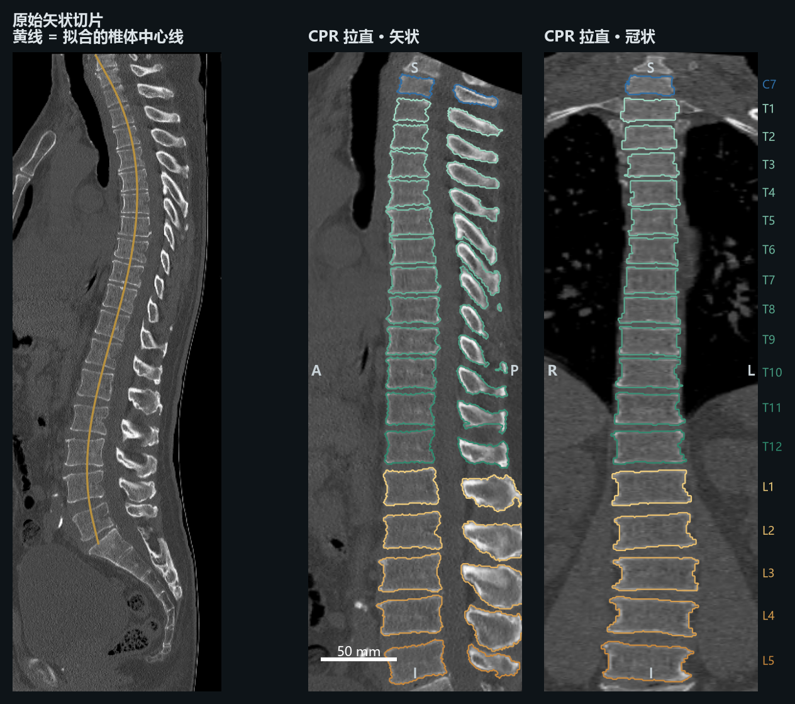
第三部分：可视化
CPR 把弯的拉直；三维重建负责告诉观众“这是什么”
CPR 是临床看脊柱、血管最常用的做法。一张竖长图就包含 C7 到 L5 的全部椎体和椎间隙，适合放在页面中间作主图。拉直会改变空间关系，所以旁边要配一张原图或三维图说明中心线在哪里。
三维表面直观，但静态截图里前后遮挡、看不出深度，也不能直接量距离。适合做封面或一页的左上角定位图，不适合承载主要结论。
第三部分：可视化
网页和 PDF 的区别：这里可以逐层翻
拖动滑块或在图上滚动鼠标滚轮，从左到右浏览 86 层矢状面（层间距 2 mm）。
放进 PPT 时有三种替代：插入一段循环播放的视频或 GIF；用上一页的灯箱把“多层”换成“多格”；或者只放一张图，附上二维码链接到这个页面。PDF 论文里一般用第二种。
第三部分：可视化
把这些组合起来：一页 16:9 讲完一个病例
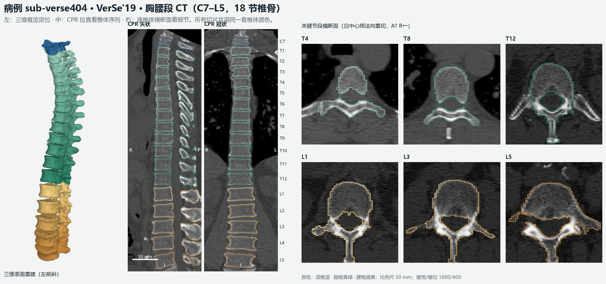
版面思路
左侧三维重建负责定位，中间 CPR 作为主图，右侧只放需要讲的几节横断面。从左到右，从整体到局部。三处共用一套颜色，观众不用来回对照图例。
放图前检查一遍
- 按物理间距显示（imshow 的 aspect 设为 spacing 之比），或先重采样到各向同性。
- 每张切片标方位字母（S/I、A/P、R/L）和比例尺。
- 写明窗宽和窗位；MRI 写明归一化方式。
- 标签用文字编号，不只靠颜色区分；配色选色盲友好的组合。
- 图像导出 200–300 dpi 的 PNG，统计图导出 SVG 或 PDF，放进 PPT 后不要再拉伸。
小结
三点结论
- 数据：先统一方向和间距，再看灰度的物理含义。镜像数据一定要抽样看图，RSNA 镜像里就有约 2% 的坏图。
- 指标：CT 椎骨分割的 Dice 已经在 0.9 附近饱和，真正难的是识别移行椎和跨数据集泛化；MRI 上的难点是厚层导致的椎间盘分割；诊断分级的前几名都靠“先定位再分类”。
- 可视化：三维数据放进二维页面，推荐 CPR 作主图、灯箱展示逐节细节、三维重建只负责定位；标签画轮廓并写编号。
代码在 scripts/：download_samples.py 下载样例，inspect_basic.py 输出形状和值域，三个 fig_*.py 生成本页所有图。
可能被问到的问题
为什么 SPIDER 不直接标 L1–L5？
约 35% 的人有腰骶移行椎，6.6% 有第六腰椎，而大部分病例的视野只覆盖腰段，看不到胸椎。数不到 T12 就无法确定最下面一节是不是 L5，所以只按位置从下往上编号。
VerSe 的 Dice 为什么比识别率低？
Dice 只对识别正确的椎骨计算重叠，识别错的那节在两个标签上都记为 0，对 Dice 的影响是双倍的。另外椎弓、横突这些细小结构的边界误差对 Dice 影响很大。
厚层 MRI 分割时怎么处理各向异性？
常见做法是重采样到比较接近的间距（SPIDER 基线用 2 × 0.6 × 0.6 mm），或者在网络里用各向异性的卷积核、只在层内下采样。nnU-Net 会根据间距比自动选择 2D 或 3D 配置。
RSNA 的分数为什么越低越好，0.40 算好吗？
它是加权交叉熵。我用镜像里的类别比例算了一个“什么都不看、只输出先验”的常数预测，五种病变平均约 0.96（没算竞赛额外的 any_severe 项，也没有实际提交）。冠军 0.41 大约把这个损失降到了一半以下。重症样本权重为 4，错一个的代价是轻症的四倍。
CPR 会不会引入失真？
会。中心线外侧的结构被拉伸或压缩，曲率越大越明显，所以 CPR 上不能直接量长度和角度。展示时应配一张原始切面说明中心线位置，测量回到原图上做。
这些数据能混在一起训练吗？
VerSe 和 CTSpine1K 标签定义一致（1–25），可以直接合并，但要注意 CTSpine1K 本身包含 VerSe 的 41 例，合并时要去重，并按病人划分。SPIDER 的编号体系不同，需要先映射。
参考文献与数据来源
本页所有数字的出处
- Sekuboyina A. et al. VerSe: A Vertebrae labelling and segmentation benchmark for multi-detector CT images. Medical Image Analysis, 2021. github.com/anjany/verse
- Deng Y. et al. CTSpine1K: A Large-Scale Dataset for Spinal Vertebrae Segmentation in Computed Tomography. MELBA, 2025. github.com/MIRACLE-Center/CTSpine1K
- van der Graaf J.W. et al. Lumbar spine segmentation in MR images: a dataset and a public benchmark. Scientific Data 11, 264 (2024). zenodo.org/records/10159290
- SPIDER Grand Challenge 排行榜. spider.grand-challenge.org
- Richards T.J. et al. The RSNA Lumbar Degenerative Imaging Spine Classification (LumbarDISC) Dataset. Radiology: AI, 2026.
- RSNA 2024 Lumbar Spine Degenerative Classification, Kaggle，第 1、2 名方案说明及第 3 名代码仓库 Moyasii/Kaggle-2024-RSNA-Pub.
- A high-quality dataset featuring classified and annotated cervical spine X-ray atlas. Scientific Data, 2024. github.com/yran888/CSXA-dataset
- Payer C. et al. Coarse to fine vertebrae localization and segmentation with SpatialConfiguration-Net and U-Net. VISAPP 2020.
- Meng D., Boyer E., Pujades S. Vertebrae localization, segmentation and identification using a graph optimization and an anatomic consistency cycle. arXiv 2110.12177.
- SpineCLUE: Automatic vertebrae identification using contrastive learning and uncertainty estimation. arXiv 2401.07271, 2024.
- SpineContextResUNet: A computationally efficient residual UNet for spine CT segmentation. arXiv 2605.20760, 2026.
- Isensee F. et al. nnU-Net: a self-configuring method for deep learning-based biomedical image segmentation. Nature Methods, 2021.
- 数据镜像：huggingface.co/datasets/alexanderdann/CTSpine1K，GilbertKrantz/rsna-lumbar-spine-dataset，MartialTerran/Cervical_Spine_X-ray_Atlas_CSXA_V3.0。